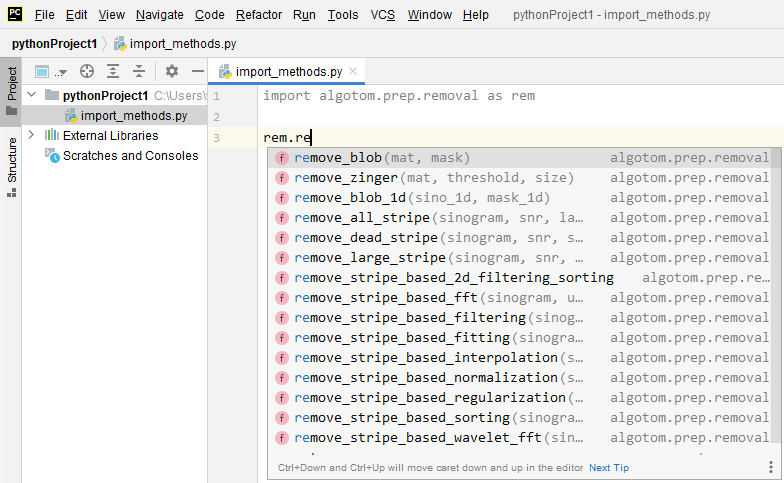

1.1. Python for tomography scientists as beginners¶
It is common that well-made software cannot provide all the tools for scientists to perform their analysis. In such cases, knowing how to program becomes crucial. There are many open-source programming languages to choose, in which Python and its rich ecosystem are dominantly used in the science community for its ease-of-use. This section dedicates to whom would like to write Python codes to process their data but don’t know where to start. There are many ways/resources to install/learn Python, however, the section focuses to present approaches which are easy-to-follow and practical.
1.1.1. Installing Python and tools for writing codes¶
To start, users need to install two software: one is Python and one is for writing codes, known as IDE (Integrated Development Environment) software. The second one is optional but it’s important for coding and debugging efficiently. Python can be downloaded and installed through Anaconda which not only distributes Python and its ecosystem but also Conda, a package management software, to install Python libraries with easy. These open-source libraries, contributed by the developer community, are the main reason for the popularity of Python.
After installing Anaconda, users can run Anaconda Powershell Prompt (e.g. on WinOS) to manage and install Python packages (i.e. libraries). A collection of Python packages installed is known as an environment. An environment created by a package manager (e.g. Conda) helps to deal with the conflict of Python packages using different versions of dependencies. This link is useful for whom want to know more about Python environment. There is a list of popular Python libraries shipped with Anaconda, known as the base environment. To install Python packages out of the list, it’s a good practice that users should create a separate environment from the base. Instructions of how to create a new environment and how to install new packages are here and here.
Fig. 1.1.1 Combination of conda commands to: create an environment named algotom, install Python 3.9, activate the environment, then install the algotom package from the algotom channel.¶
The next step is to install an IDE software for writing codes. There are many free choices: Pycharm (Community edition), Pydev, Spyder, or VS Code. Here, we recommend to use Pycharm because it is charming as the name suggested. After installing Pycharm, users have to configure the software to link to a Python interpreter by pointing to the location of Python packages installed (Fig. 1.1.2).
Fig. 1.1.2 Demonstration of how to configure Pycharm to link to a Python environment.¶
1.1.2. Python ecosystem of libraries¶
The power and popularity of Python come from its enormous ecosystem. Crucially, supporting tools such as Conda, Pip, and Github make it very easy for developers/users to develop/install Python libraries. Nowadays, imaging scientists can use Python libraries to perform almost every task in the workflow from data acquisition, data processing, data analysis, to data visualization. Python libraries can be classified into a few types. The first one is the standard library, i.e. the built-in packages. They are shipped with Python. The second type is well-developed and popular libraries maintained by dedicated software development teams. List of such libraries can be found in this link which are shipped with Anaconda software. The third type are libraries developed by organizations, academic institutions, or research groups dedicated to specific technical/scientific areas. The last type of libraries is contributed by individuals who would like to share their works.
A Python package is commonly built based on other Python libraries known as dependencies. This can cause conflicts between libraries using different versions of the same libraries. In such cases, a package manager like Conda is crucially needed. Python libraries are distributed through https://anaconda.org/ and https://pypi.org/. Users can search packages they need in these websites where instructions of how to install these packages using the conda or pip command are shown on the page of each package. Lots of Python packages are distributed on both platforms. However, there are packages only available in one platform. Fortunately, Conda allows to use pip to install packages as well. Users are recommended to check this tutorial to know more about the difference between conda and pip.
The following list shows some Python packages which are useful for the tomography community. The selected packages are installable using conda/pip and work across OS (Windows, Linux, Mac).
Numerical computing: Numpy, Scipy, Pyfftw, Pywavelets, …
Image processing: Scikit-image, Pillow, Discorpy, Opencv, …
Tomographic data processing: Tomopy, Astra Toolbox, Algotom, Cil, …
GPU computing: Numba, Cupy, …
Hdf file handling: H5py
Data visualisation: Matplotlib, Vtk, …
Parallel processing: Joblib, Dask, …
There are other Python software for processing tomographic data such as Savu, Tigre, tofu-ufo, or Pyhst2. However, they either don’t work across OS or are not distributed with conda/pip.
1.1.3. Where/how to start coding¶
Python is the programming language that one can learn easily using the top-down approach instead of the bottom-up one which takes time. For example, one can start by asking questions such as: how to read an image, apply a smoothing filter, and save the result; then finding the answers using Google, Stackoverflow, or referring codes shared on Github. The following presents notes and tips about Python users may find useful before diving into coding.
For quickly getting to know the syntax of the Python language, the python-course.eu website is a good place to start.
In computational applications, we don’t often use the standard library of Python but the Numpy library. Almost all of computational Python-libraries are built on top of Numpy. Although it is a backbone for the success of Python, Numpy is not included into the standard library of Python. Users have to install it separately, or they can just install a package which has Numpy as a dependency. The following codes show an example of how to find the sum of a list of float numbers using both approaches: the standard library and Numpy. A rule of thumb is to avoid using the standard library for computational works which use looping operations. Numpy provides most of basic tools, optimized for speed, to perform math operations on n-dimension arrays. Users can build complex applications on top of these tools.
import numpy as np vals = [1.0, 3.0, 5.0, 7.0, 8.0] # Using the standard lib sum = 0.0 for i in vals: sum = sum + i # Using Numpy sum = np.sum(np.asarray(vals))
Functions (known as methods) in each Python library is organized into folders, sub-folders (known as packages), then Python files (known as modules). Users can use functions needed by importing a whole package, specific sub-packages, specific modules, or specific methods.
import scipy # Load the whole package from scipy import ndimage as ndi # Import sub-package, give it an alias name. import scipy.ndimage as ndi # Another way to import sub-packge. import scipy.ndimage.filters as fil # Import a module, give it an alias name. from scipy.ndimage.filters import gaussian_filter # Import a specific method in a module.
Because Python libraries are a huge collection of functions, users better use the help of IDE software to find the right functions as demonstrated in Fig. 1.1.3. Using alias names for importing packages is a good practice to avoid the naming conflict, i.e. a user-defined function is named the same as a function in the library.
Fig. 1.1.3 Demonstration of how Pycharm can help to see a list of available functions.¶
There are n-dimension array objects created by different Python libraries which look similar but their properties and uses are different. Users have to make sure that they use the right methods on the right objects.
import numpy as np import dask.array as da import cupy as cp data = [[1.0, 2.0, 3.0], [3.0, 4.0, 5.0]] # Python-list object data_np = np.asarray(data) # Numpy-array object data_da = da.from_array(data_np) # Dask-array object data_cp = cp.array(data) # Cupy-array object
To use functions from Python packages in a script, users use the import command as shown above. When the command is executed, the Python interpreter automatically checks a few places to find such packages: paths in the system environment variables (e.g. WinOS: “Edit the system environment variables” -> “Environment variable”), paths in the current Python environment (e.g. WinOS: “C:Users<user_ID>Anaconda3envs<env_name>”), and the current location of the script. If the import fails, users need to check: if the package is installed (e.g. using conda list in an activated environment) and/or if the package is at the same path as the script.
In Pycharm, if a package keeps failing to import , even though the package is installed and the Pycharm project is configured to the right Python environment, users can try one of the following ways:
Run conda init.
Run Pycharm from the activated environment (e.g Win OS: Powershell Prompt -> conda activate <env_name> -> pycharm)
If users want to add the path to a package manually, they can do that as follows.
import sys sys.path.insert(0, "C:/<Path-to-package>") import <package-name>
this is handy when users download a Python package somewhere and want to import its functions to the current script without installing the package. Note that Python libs (dependencies) used by the package need to be installed.
Video tutorials are the best resources to learn new things quickly. There are many amazing tutorials on Youtube.com (free), Udemy.com (not free but at affordable price). They teach nearly everything about Python and its ecosystem. For tomography scientists, the youtube channel of Dr. Sreenivas Bhattiprolu is highly recommended. The uploaded tutorials accompanied by Python codes cover from basic topics of image processing to advanced topics such as image segmentation and deep-learning.